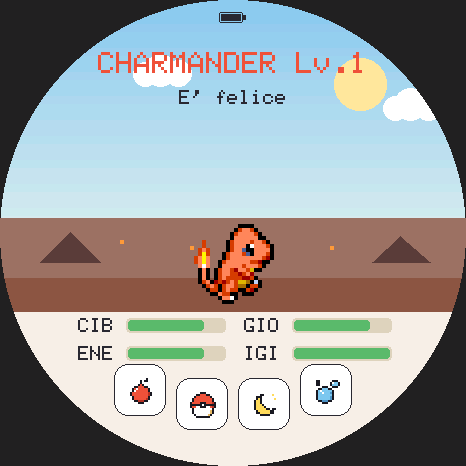
Per la Waveshare ESP32-S3-Touch-AMOLED-1.75,
nel browser e sul telefono
Come usare questo libretto
Questo libretto racconta tutto quello che c'è da sapere per crescere il tuo compagno: dai primi tocchi sullo schermo alle battaglie in collegamento, dai salvataggi agli aggiornamenti via WiFi. Puoi leggerlo dall'inizio alla fine o saltare al capitolo che ti serve: l'indice è nella pagina accanto.
I numeri che trovi qui (quanto cala una barra, ogni quanto si sale di livello, quanto è raro uno shiny) sono quelli veri, presi dal codice del gioco.
Nei riquadri verdi trovi i consigli per giocare meglio.
Nei riquadri rossi le cose da evitare, per non perdere la partita o rovinare la scheda.
Nei riquadri blu i dettagli per chi vuole sapere come funziona sotto il cofano.
Le parole sullo schermo
Il gioco parla otto lingue; in questo libretto si usano le parole dell'italiano, che è la lingua predefinita. Le scritte del gioco sono in MAIUSCOLO o tra virgolette («Lotta»), i tasti fisici così: PWR.
PokeGotchi è un progetto amatoriale, gratuito e senza scopo di lucro. Non è affiliato né approvato da Nintendo, Game Freak, Creatures o The Pokémon Company. Pokémon e i nomi dei personaggi sono marchi dei rispettivi proprietari. Gli sprite sono della comunità PMD SpriteCollab (CC BY-NC 4.0). Tutti i crediti sono nell'appendice D.
PokeGotchi è un animaletto virtuale ispirato ai Pokémon della prima generazione. Vive nello schermo rotondo di una piccola scheda elettronica e cresce con il tempo reale: ha fame, si annoia, si sporca, ha sonno, e conta su di te. Se te ne prendi cura sale di livello, si evolve e un giorno ti saluterà lasciandoti un uovo nuovo, da cui potrebbe nascere un Pokémon raro, o persino uno shiny.
Tutti i 151 Pokémon originali possono nascere, ognuno con il suo sprite animato in stile Mystery Dungeon, e anche in versione shiny. Strada facendo lo potrai allenare, far combattere contro i Pokémon selvatici, portare nei minigiochi, conservare in una collezione e far lottare o scambiare con un amico che ha un'altra scheda.
Cosa ti serve
- La scheda Waveshare ESP32-S3-Touch-AMOLED-1.75, nella versione standard o «-G» (quella con il GPS, che il gioco non usa). La «-B» no: arriva con una scocca in cui non entra il resto.
- Una microSD formattata in FAT32: contiene gli sprite dei Pokémon (circa 40 MB) e le copie dei salvataggi. Va bene una scheda piccola qualsiasi.
- Una batteria, se vuoi portarlo in giro: una LiPo protetta da 3,7 V (circa 1100 mAh, connettore MX1.25). Senza, la scheda va con il cavo USB-C.
- Un altoparlantino sul connettore audio della scheda, per sentire musica ed effetti.
- Un computer con Chrome o Edge, solo per la prima installazione.
Non hai la scheda? Nessun problema: lo stesso gioco gira nel browser e sul telefono, con gli stessi salvataggi (capitolo 23).
Il gioco in quattro righe
- Un minuto vero è un minuto di gioco, e ogni ora di vita vale un livello.
- Quattro barre da tenere su: cibo, gioia, energia, igiene.
- Le scelte importanti (evolversi, salutarsi) le fai tu, con un tocco.
- Ogni Pokémon cresciuto entra nel tuo Pokédex: completalo, shiny compresi.
PokeGotchi nasce da un progetto aperto, socquique/TamaPoke di Quique Tortosa, ed è cresciuto con battaglie della prima generazione, collegamento tra due schede, collezione, minigiochi a movimento, musiche del Game Boy, salvataggi, versione per il browser e aggiornamenti via WiFi. La storia completa è nell'appendice D.
La scheda ha uno schermo AMOLED rotondo touch da 466×466 pixel e, sul bordo, il pulsante PWR. Tutto il gioco si comanda con le dita, con quattro gesti.
| Gesto | Come si fa |
|---|---|
| Tocco | appoggia e solleva il dito entro 1,5 secondi, senza spostarlo |
| Scorrimento orizzontale | trascina il dito a destra o a sinistra per più di un quarto di schermo, in meno di un secondo |
| Scorrimento verticale | lo stesso, verso l'alto o verso il basso |
| Pressione lunga | tieni il dito fermo per 3 secondi: scatta senza sollevarlo |
Il gesto conta quando il dito si solleva. Fa eccezione il sacco da allenamento, dove ogni colpo parte appena tocchi.

Il pulsante PWR
| Pressione | Cosa fa |
|---|---|
| Breve | spegne o riaccende lo schermo: il gioco continua a girare |
| Lunga (4 secondi) | spegne la scheda del tutto |
Anche spenta, la scheda tiene il conto del tempo con il suo orologio interno: quando la riaccendi il Pokémon «recupera» il tempo passato (capitolo 6). Con lo schermo spento basta anche un tocco per riaccenderlo.
Lo schermo si riposa
Dopo 90 secondi senza tocchi lo schermo si abbassa, e dopo 5 minuti si abbassa ancora: così l'AMOLED dura di più e la batteria anche. Quando è abbassato, il primo tocco lo riaccende soltanto, senza fare altro: puoi toccare dove vuoi senza paura.
In quasi tutte le schermate, la fascia in basso con scritto «tocca: indietro» ti riporta alla schermata precedente.
Il modo più semplice è l'installer web: una pagina che scrive il gioco sulla scheda e ci carica gli sprite, dal browser. Funziona con Chrome o Edge su un computer (serve la funzione Web Serial, che gli altri browser non hanno).
francescomannarino.github.io/PokeGotchi/installa/
Inserisci la microSD nella scheda, collegala al computer con un cavo USB-C che porti anche i dati, apri la pagina e segui i passi.
- Salva i progressi. Se sulla scheda c'è già un Pokémon, «Scarica i progressi»
ne salva una copia sul computer (un file
.pgsave). Su una scheda nuova salta questo passo. - Flasha il firmware. Scegli la porta della scheda e conferma. Su una scheda nuova spunta «Erase device»; per aggiornare non spuntarlo, e il tuo Pokémon resta dov'è.
- Ripristina i progressi, solo se hai cancellato la scheda: «Carica i progressi» rimanda il file del passo 1. Conferma con SÌ sullo schermo della scheda.
- Carica gli sprite sulla microSD: la pagina scarica il pacchetto (circa 40 MB) e lo copia sulla scheda attraverso il cavo.
- Imposta data e ora: la pagina manda alla scheda quelle del computer.
La porta USB la può usare un solo programma alla volta: chiudi la finestra del flash (passo 2) prima dei passi 3, 4 e 5.
La microSD
Deve essere in FAT32. Le microSD da più di 32 GB escono di fabbrica in exFAT, che la scheda non legge: formattale in FAT32 dal computer. Il gioco non formatta mai la scheda da solo. Senza microSD si gioca lo stesso, ma solo con nove Pokémon disegnati in modo semplice, e senza copie dei salvataggi.
Gli aggiornamenti
Una volta installato, il gioco si aggiorna da solo via WiFi, dalle impostazioni (capitolo 22). L'installer resta utile per le schede nuove e per chi preferisce il cavo.
Chi programma può anche compilare il firmware con arduino-cli: le
istruzioni sono nel file docs/SVILUPPO.md del repository.
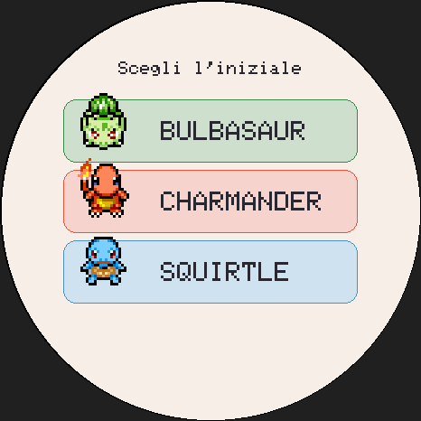
Alla prima accensione il gioco ti chiede di scegliere il tuo iniziale, come nel laboratorio del Professor Oak: Bulbasaur, Charmander o Squirtle. Tocca una delle tre righe.
Finché non scegli, gli altri gesti sono bloccati.
Se nella microSD c'è un salvataggio (per esempio quello di un'altra scheda), prima della scelta il gioco ti propone di riprendere quella partita.
L'uovo
Il tuo iniziale arriva dentro un uovo. Toccalo tre volte per farlo schiudere, oppure aspetta: dopo 3 minuti si schiude da solo.
Alla schiusa il Pokémon riceve i suoi geni: per ogni statistica un valore dal 90 al 110 % che lo rende unico (capitolo 13).
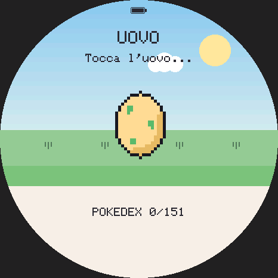
Prima di tutto: l'orologio
Giorno e notte, le ricompense giornaliere e il tempo che passa da spento dipendono dall'orologio della scheda. Se non l'hai impostato con l'installer, fallo subito: scorri verso il basso dalla schermata principale (capitolo 20).
- In alto il nome e il livello (Lv.), e sotto una frase su come sta: «È felice», «Ha fame!», «Ha sonno»…
- Al centro il Pokémon, che passeggia, si guarda intorno, fa i suoi gesti.
- Sotto le quattro barre: CIB, GIO, ENE, IGI.
- In basso quattro pulsanti.
| Pulsante | Cosa fa |
|---|---|
| Mela | apre il menu del cibo (capitolo 7) |
| Pokéball | apre la scelta dei giochi (capitolo 14) |
| Luna | spegne la luce: il Pokémon va a dormire, o si sveglia |
| Bolle | il bagnetto |
Toccare il Pokémon lo coccola; una pressione lunga su di lui chiede se vuoi lasciarlo libero (capitolo 10). In alto c'è anche l'icona della batteria e, quando hai una serie di giorni di cure, la fiammella della serie (capitolo 11).
Un mondo che cambia
Il cielo segue l'ora vera: alba, giorno, tramonto e notte, con la luna e le stelle. Il terreno dipende dal tipo del Pokémon: prateria, spiaggia, bosco, vulcano, montagna o neve. Quando dorme è sempre notte.
Pulsanti che compaiono
Sopra il Pokémon, ogni tanto, compare un pulsante che pulsa: rosso quando può evolversi, dorato quando è pronto a salutarti, scuro quando si sente abbandonato. Hanno la precedenza sulle coccole: li trovi nei capitoli 8 e 10.
Vedi delle cacche per terra? Sono al massimo tre, e ognuna fa crollare l'igiene. Un bagnetto le fa sparire tutte.
Ogni barra va da 0 a 100. Un Pokémon appena nato parte con cibo, gioia ed energia a 80 e l'igiene a 100. Da sveglio, ogni minuto le barre scendono così:
| Barra | Al minuto | Scende di più se… |
|---|---|---|
| CIB cibo | −2 | |
| ENE energia | −1 | è sovrappeso: −1 in più |
| IGI igiene | −1 | ci sono cacche: −4 in più per ognuna |
| GIO gioia | −1 | ha fame (CIB sotto 30) o è sporco (IGI sotto 30): −2 in più per ciascuno |
Con la pancia piena (CIB sopra 40) c'è circa il 15 % di probabilità ogni minuto che faccia una cacca, fino a tre.
La trascuratezza
Quando una barra arriva a 10 o meno conta come una trascuratezza (al massimo una ogni 30 minuti). Ogni trascuratezza ritarda l'evoluzione di un livello e raffredda il legame. Le trovi contate nella pagina Progressi della scheda.
Di notte
Mentre dorme l'energia sale di 6 al minuto e le altre barre scendono circa quattro volte più piano, senza andare sotto 30 (cibo), 35 (gioia) e 45 (igiene). Niente cacche, niente trascuratezze, e non può scappare.
Quando la scheda è spenta
Il tempo passa anche a scheda spenta, e alla riaccensione il Pokémon lo recupera (fino a due settimane), ma con un occhio di riguardo:
- le barre non scendono sotto 15: lo ritrovi affamato, non disperato;
- niente trascuratezze e niente fughe mentre non ci sei;
- al massimo una cacca ogni 4 ore (sempre fino a tre);
- se dormiva, ha dormito: energia su, il resto giù piano;
- l'evoluzione non avviene in tua assenza: ti aspetta, per fartela vedere.
Una buona routine: cibo e coccole al mattino, un gioco a metà giornata, bagnetto e nanna la sera. Il cibo scende più in fretta di tutto: controllalo spesso.
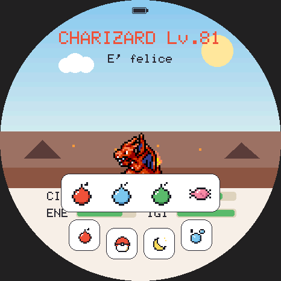
Il menu del cibo
La mela apre quattro voci, che restano aperte per 6 secondi: bacca rossa, bacca blu, bacca verde e dolcetto. Un tocco fuori lo chiude senza dare niente. Mentre dorme non si mangia.
| Cibo | Effetto |
|---|---|
| Una bacca | CIB +25 |
| La bacca preferita | CIB +35, GIO +10, un cuore e un po' di legame |
| Dolcetto | CIB +10, GIO +12, ma +12 di peso |
Ogni specie ha un gusto preferito nascosto tra i tre colori. Quando lo indovini si illumina di gioia, e da quel momento la scheda del Pokémon lo ricorda (alla voce «BACCA»). Trovarlo vale anche una medaglia.
Il peso
Il peso non si vede, ma conta: sale con i dolcetti e si brucia giocando e allenandosi. Sopra 50 il Pokémon è sovrappeso e diventa pigro (perde energia più in fretta). La medaglia «In forma» vuole peso zero.
Coccole
Tocca il Pokémon: GIO +5 e un po' di legame. Funziona sempre, anche come gesto di cura quando sta per scappare.
Il bagnetto
Le bolle avviano un bagnetto di 3 secondi: tutte le cacche spariscono e l'igiene torna a 100. Non si fa mentre dorme.
La nanna
La luna spegne la luce: il Pokémon si rannicchia e dorme, e la scena diventa notte. Toccala di nuovo per svegliarlo. Dormire ricarica l'energia (vedi il capitolo 6); mentre dorme non mangia, non gioca, non fa il bagno e non combatte.
Il livello dipende solo dall'età: +1 livello per ogni ora di vita, fino a 999. Curarlo bene non lo fa crescere più in fretta, ma trascurarlo ritarda l'evoluzione.
Quando si evolve
Un Pokémon può evolversi quando sono vere tutte e due le cose:
- ha raggiunto il livello della sua evoluzione (quello di Rosso e Blu: 16 per la maggior parte delle forme base, circa 30 per chi si evolve con una pietra, circa 40 per chi si evolve con uno scambio), più un livello per ogni trascuratezza;
- ogni barra è almeno a 40, e non sta dormendo.
Allora suona un avviso e sopra di lui compare il pulsante rosso. L'evoluzione non avviene mai da sola: toccalo tu, e scegli.
| Scelta | Cosa succede |
|---|---|
| Evolvi | parte l'animazione: un alone, raggi, scintille, e la forma vecchia e quella nuova che si alternano sempre più veloci |
| Mantieni forma | resta com'è; la proposta torna al livello successivo |
Il dialogo resta aperto 12 secondi; un tocco fuori lo chiude senza scegliere. La pagina Progressi della scheda ti dice quanti livelli mancano («Evolve tra 15 liv.»).
Casi speciali
- Eevee si evolve verso la forma che ti manca ancora nel Pokédex.
- Kadabra, Machoke, Graveler e Haunter, come nei giochi originali, si evolvono quando li ricevi con uno scambio (capitolo 18). Se hai una sola scheda niente paura: ci arrivano anche con i livelli, intorno al 40.
Il livello sale fino a 999, ma in battaglia conta al massimo 100, come nei giochi originali.
Dopo il primo iniziale, ogni Pokémon nasce da un uovo, che arriva alla fine di un ciclo di vita (capitolo 10). L'uovo tira una rarità tra le circa 79 forme base che possono nascere:
| Rarità | Di solito | Dopo un addio | Specie |
|---|---|---|---|
| Leggendario | ~3 % | ~10 % | 5 |
| Raro | ~27 % | ~45 % | 27 |
| Comune | il resto | il resto | 47 |
- I leggendari cominciano a uscire solo dopo che hai registrato almeno 25 specie nel Pokédex.
- Una serie lunga e un legame alto migliorano le probabilità.
- Un addio benedice l'uovo successivo; una fuga lo maledice: esce per forza un Pokémon comune.
- Dentro una rarità, l'uovo preferisce le specie di cui non hai ancora completato la linea evolutiva: così tutti i 151 si possono completare.
Gli shiny
Ogni uovo ha 1 possibilità su 48 di dare uno shiny, con i colori diversi. Subito dopo un addio sale a 1 su 24, e serie e legame la migliorano fino a 1 su 8. Nel Pokédex gli shiny si contano a parte.
I geni
Alla schiusa ogni Pokémon riceve i suoi geni: per attacco, difesa e velocità un valore tra il 90 e il 110 %. Non ce ne sono due uguali, e i geni contano nelle battaglie.
Un ciclo di vita può finire in tre modi. Nessuno arriva da solo: compare un pulsante (o fai tu il gesto) e scegli tu, così sei lì ad assistere.
L'addio
Quando il Pokémon è nella sua forma finale e ha vissuto 3 giorni, compare il pulsante dorato. Toccalo e scegli:
- Addio: un saluto caloroso, i cuori che salgono, e un uovo nuovo benedetto (più raro, e più facilmente shiny);
- Restare insieme: il tuo amico resta con te; la proposta torna dopo un giorno.
La fuga
Se lasci tutte e quattro le barre a zero per un'ora intera, il Pokémon si sente abbandonato e compare il pulsante scuro. Il dialogo propone «Lascialo andare» o «Me ne prendo cura».
Basta un solo gesto di cura (cibo, coccole, bagnetto…) per annullare la fuga. Se lo lasci andare, se ne va sotto la pioggia, e l'uovo dopo sarà maledetto: per forza un Pokémon comune.
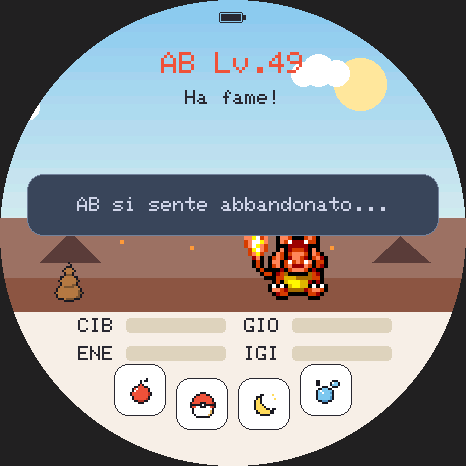
Il rilascio
Una pressione lunga di 3 secondi sul Pokémon apre «Rilasciare?»: con SÌ lo lasci libero, alle tue condizioni. È il finale neutro: l'uovo dopo è normale. Il dialogo si chiude da solo dopo 10 secondi, e ogni tocco che non sia SÌ annulla.
La cerimonia e la collezione
Ogni finale ha la sua cerimonia di 10 secondi, durante la quale lo schermo non risponde. Dopo un addio, o il rilascio di una forma finale, la cerimonia si ferma sull'ultima immagine e chiede «Conservare <nome>?»: con SÌ entra nella tua collezione (capitolo 17). Poi nasce l'uovo nuovo.
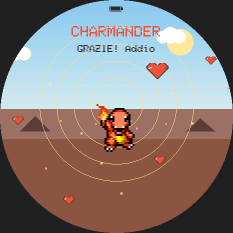
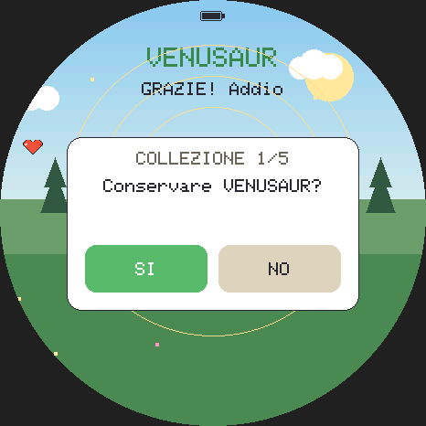
La serie
La serie è tua, non del Pokémon: la prima cura di ogni giorno la fa avanzare, e saltare un giorno la interrompe. I traguardi di 3, 7, 30 e 100 giorni si festeggiano. Sulla schermata principale la serie ha la sua fiammella, e la scheda mostra la serie attuale e il record. Passa da un Pokémon al successivo.
Il legame
Il legame è del Pokémon e riparte da zero a ogni schiusa. Cresce con le cure, le coccole e le bacche preferite (al massimo +8 al giorno) e si raffredda con le trascuratezze. Lo vedi come barra «LEG» nella scheda.
Serie e legame alti rendono più probabili le uova rare e gli shiny.
Le medaglie
Ogni Pokémon può guadagnare 8 medaglie, che vedi nella terza pagina della sua scheda. Il gioco tiene anche il conto di tutte quelle vinte da sempre.
| Medaglia | Come si vince |
|---|---|
| Livello 10 | arriva al livello 10 |
| Livello 25 | arriva al livello 25 |
| Livello 50 | arriva al livello 50 |
| Bacca trovata | scopri la bacca preferita |
| Serie 7 giorni | una serie di 7 giorni |
| Legame max | legame al massimo |
| Forma finale | raggiunge l'ultima evoluzione |
| In forma | peso zero e nessuna trascuratezza |
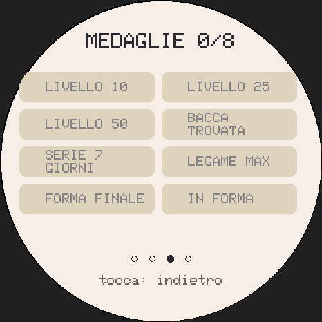
Dalla schermata principale scorri verso l'alto (con l'uovo non si apre). La scheda ha quattro pagine: scorri a destra e a sinistra per sfogliarle; scorri di nuovo in su, o tocca un punto qualsiasi fuori dai pulsanti, per chiuderla.
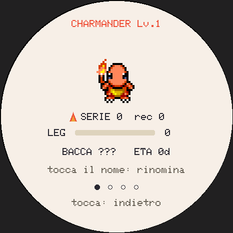
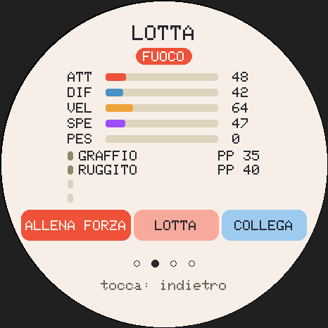
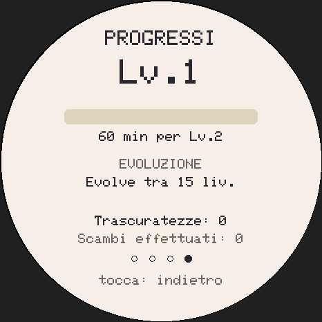
| Pagina | Cosa trovi |
|---|---|
| Profilo | lo sprite, la serie e il record, il legame (LEG), la bacca preferita (se l'hai trovata), l'età in giorni; per un Pokémon ricevuto con uno scambio anche «AO», il suo allenatore originale |
| Lotta | i tipi, attacco, difesa, velocità e speciale, il peso, le 4 mosse con i loro PP; i pulsanti «Allena forza», «Lotta» e «Collega» |
| Medaglie | le 8 medaglie (capitolo 11) |
| Progressi | la barra verso il prossimo livello, i livelli che mancano all'evoluzione, le trascuratezze, gli scambi fatti |
Dare un nome
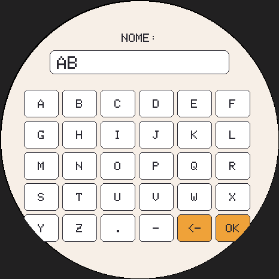
Nel Profilo, tocca il nome in alto: si apre la tastiera. Ci sono le lettere dalla A alla Z, il punto e il trattino, fino a 11 caratteri. Il tasto <- cancella, OK salva e torna alla scheda.
Non c'è un tasto per annullare: OK salva quello che c'è scritto. Un nome vuoto riporta al nome della specie.
Ogni Pokémon ha le statistiche di combattimento della prima generazione: attacco, difesa, velocità e speciale. Partono dai valori base reali della sua specie, poi contano i geni (capitolo 9), il livello e l'allenamento.
| Allenamento | Come si allena |
|---|---|
| FORZA (attacco) | il sacco da allenamento; le vittorie in battaglia (+2) |
| DIFESA | la Grotta Diglett; 12 ore di fila di buone cure; le vittorie in battaglia (+2) |
| VELOCITA' | il minigioco della palla |
| SPECIALE | la media di forza e difesa, come nei giochi originali |
Ogni allenamento va da 0 a 100. Le statistiche si vedono nella pagina Lotta della scheda.
Il sacco da allenamento
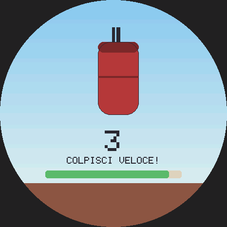
Dalla pagina Lotta della scheda, «Allena forza». Hai 10 secondi: ogni tocco sotto l'intestazione è un colpo, appena il dito si appoggia, quindi martella! Circa 4 colpi valgono 1 punto di forza, fino a +18 a sessione. Allenarsi stanca. Toccare l'intestazione esce.
In battaglia le statistiche si calcolano con la formula di Rosso e Blu: i geni diventano i DV (da 0 a 15) e l'allenamento il bonus (da 0 a 63). Un Tauros al livello 100 con geni al 110 % e allenamento pieno ha 353 PS, 298 di attacco, 288 di difesa, 318 di velocità e 238 di speciale: il massimo di Rosso e Blu.
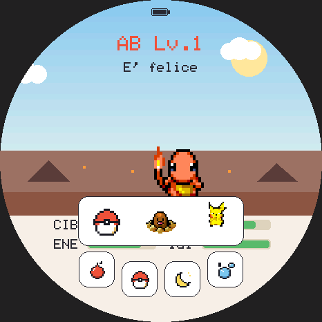
Il pulsante con la Pokéball apre la scelta dei giochi: tre caselle con la Pokéball, Diglett e Pikachu. Si chiude da sola dopo 6 secondi, o con un tocco fuori. Non si gioca con l'uovo, mentre dorme o durante una cerimonia.
In ogni gioco, toccare l'intestazione in alto esce subito, senza premio.
La palla
Una Pokéball rimbalza nel cerchio, sempre più veloce. Toccala (vale un tocco fino a circa un dito di distanza) per rilanciarla: ogni colpo è un punto. Se tocca terra è persa; alla terza la partita finisce. Allena la velocità.
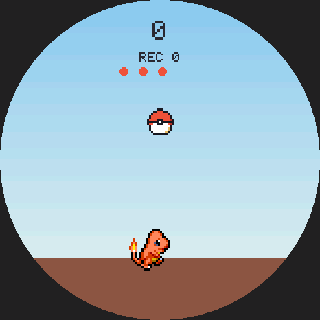
I giochi a inclinazione
La Grotta Diglett e il Surf si giocano inclinando la scheda, che ha un sensore di movimento. All'inizio, per un secondo e mezzo, «tienila come per giocare»: è lo zero, e l'inclinazione si misura da lì, quindi puoi giocare anche sdraiato. Basta inclinarla poco: al massimo serve un quarto di giro.
Dove il sensore non c'è (il computer, o il telefono senza permesso) si usa il dito come joystick: tienilo sullo schermo e spostalo dal centro nella direzione voluta.
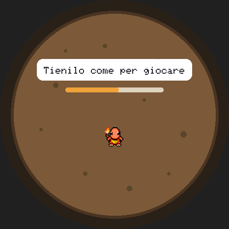
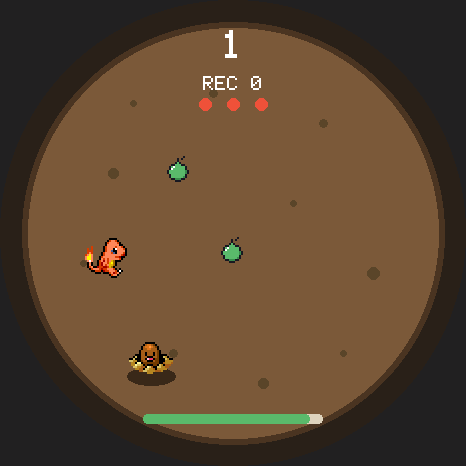
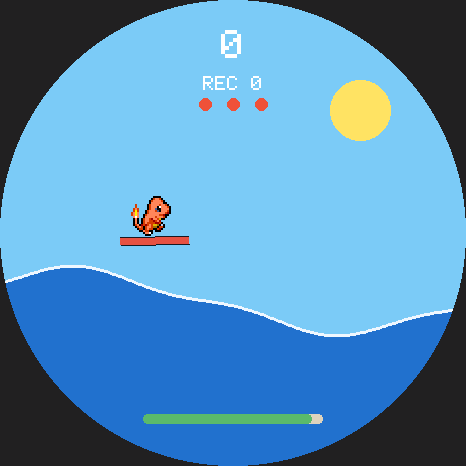
La Grotta Diglett
Il Pokémon scivola nell'arena rotonda verso il lato in cui inclini la scheda.
| Cosa | Effetto |
|---|---|
| Bacca (resta 6 secondi) | +1 punto |
| Caramella Rara (ogni ~20 secondi) | +5 punti |
| Diglett: la terra trema per 1 secondo, poi spunta | un colpo, se sei lì sopra |
| Frana (da 5 punti): un'ombra cresce, poi cade un masso | un colpo, se sei nell'ombra |
| Dugtrio (da 15 punti): tre buche in fila | come il Diglett |
I pericoli arrivano sempre più spesso. Dopo un colpo il Pokémon lampeggia ed è intoccabile per un secondo. La partita finisce al terzo colpo o dopo 90 secondi. Allena la difesa: un punto di difesa ogni 4 punti, fino a +18 a partita. La musica è un brano cupo, con la batteria.
Il Surf
Ispirato alla Spiaggia di Pikachu di Pokémon Giallo, ma per tutte le specie. L'onda scorre e il Pokémon la cavalca su una tavola:
- inclina in avanti per scendere e prendere velocità, all'indietro per frenare;
- dalla cresta dell'onda, se vai abbastanza veloce, salti: più veloce vai, più resti in aria;
- in aria, inclina a destra o a sinistra per far girare la tavola;
- atterri se la tavola è parallela all'onda, con 25° di tolleranza (40° e tavola gialla per Pikachu, Raichu e i tipi Acqua); altrimenti cadi.
Ogni salto vale 1 punto, più 2 per ogni giro completo. Finisce alla terza caduta o dopo 90 secondi. Non allena statistiche. Musica: il brano della spiaggia.
I premi
Grotta e Surf danno gioia +5 più i punti (al massimo +30), stancano e bruciano peso, regalano un cuore da 10 punti in su e un po' di legame. Ogni gioco ha il suo record, che resta tuo anche con i Pokémon successivi.
Sulla schermata principale il sensore di movimento resta in ascolto, e capisce due cose:
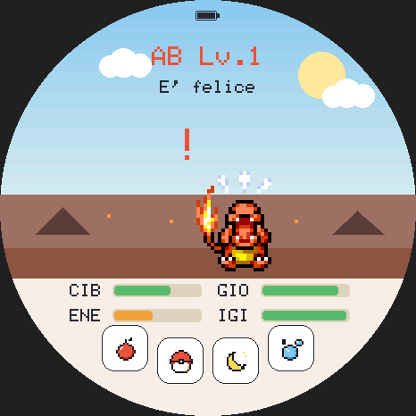
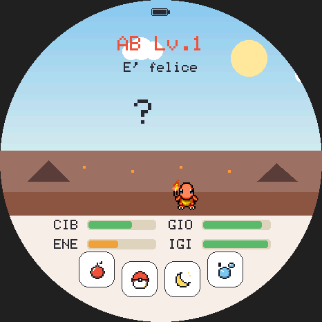
| Gesto | Effetto |
|---|---|
| Scossone (una scossa forte) | il Pokémon si spaventa: gioia −10, un «!» rosso e un suono; poi per un minuto niente altre penalità. Se dorme, −5 e continua a dormire; l'uovo dondola e basta |
| Doppio colpetto sulla scocca | se lo schermo è abbassato lo riaccende; se è acceso il Pokémon si volta, fa un cenno o un saltello e compare un «?». Nessun effetto sulle barre |
- Valgono solo sulla schermata principale, senza menu aperti; nei giochi a tocco il sensore riposa (il dito che batte sul vetro non conta).
- Con lo schermo spento con PWR il sensore è spento: in tasca la scheda prende colpi, e il Pokémon non deve soffrirne.
- Puoi spegnerli del tutto con l'interruttore MOVIMENTO del pannello Audio (capitolo 19). I giochi a inclinazione usano il sensore comunque.
- Nessuno dei due cambia il ciclo di vita.
Senza una scocca non scuotere la scheda con la batteria attaccata: il cavetto può staccarsi o il connettore piegarsi. Lo scossone è una penalità da evitare, non un comando.
Dalla pagina Lotta della scheda, «Lotta»: un Pokémon selvatico del tuo stesso ambiente (quello dello sfondo) ti sfida, a un livello vicino al tuo (da due sotto a uno sopra). Niente leggendari, e niente forme evolute prima del loro livello.
Il pulsante è grigio, e non si lotta, con l'uovo, mentre dorme, durante un'evoluzione o una cerimonia, o con l'energia sotto 20.
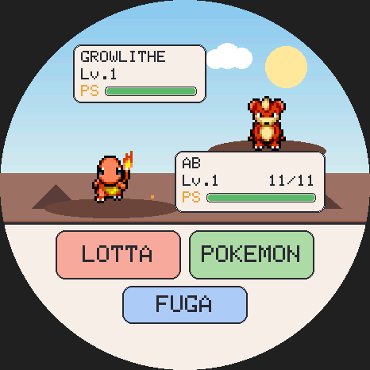
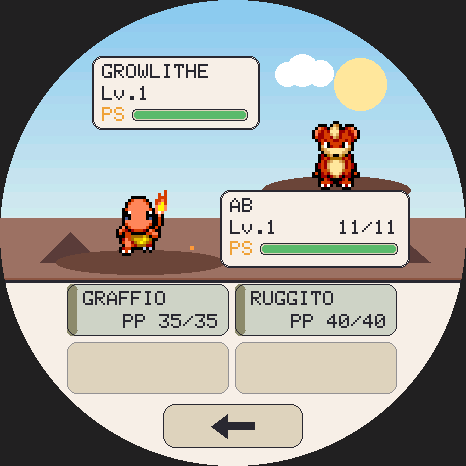
Come si combatte
- Quando c'è del testo, tocca ovunque per andare avanti.
- LOTTA apre le quattro mosse, con tipo e PP rimasti: tocca quella da usare. Una mossa senza PP non parte; senza PP in nessuna mossa si usa Scontro.
- POKEMON mostra la squadra (contro i selvatici c'è solo il tuo).
- FUGA scappa: contro i selvatici riesce sempre.
- La freccia in basso torna al menu.
Le regole della prima generazione
Tipi, debolezze, colpi critici, precisione e PP sono quelli di Rosso e Blu. Gli stati anche: il sonno dura da 1 a 7 turni (e svegliarsi costa il turno), il congelamento non passa da solo (lo scioglie solo una mossa di fuoco), la paralisi ferma un turno su quattro, veleno e scottatura tolgono un sedicesimo dei PS a turno, e la confusione dura da 2 a 5 turni. Fossa e Volo rendono imprendibili mentre si caricano, Trasformazione copia l'avversario.
Costi e premi
| Esito | Effetto |
|---|---|
| Ogni battaglia | energia −12, cibo −6 |
| Fuga | solo energia −4, cibo −2 |
| Vittoria | gioia +15, forza +2, difesa +2, legame +3 e un cuore |
| Vittoria oltre la quinta del giorno | gioia +3 e «Per oggi niente premi» |
| Sconfitta | gioia −8 |
| Pareggio | solo il costo |
Al massimo 5 vittorie premiate al giorno. Le battaglie non toccano mai il ciclo di vita: niente trascuratezze, e ogni battaglia comincia con i PS pieni. Per tutto il tempo suona la musica della lotta contro i selvatici, con la fanfara della vittoria.
Unica differenza voluta da Rosso e Blu: Focalenergia aumenta davvero i colpi critici, come in Pokémon Stadium, invece di ridurli per un vecchio errore del gioco originale.
Il Pokédex
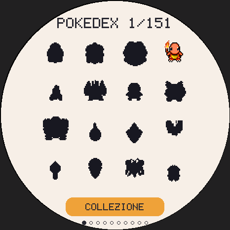
Dalla schermata principale scorri di lato. Ogni Pokémon che cresci entra nel Pokédex; quelli che mancano sono sagome. Sono 10 pagine da 16: scorri a sinistra per la pagina dopo, a destra per quella prima (dalla prima esci). Gli shiny si contano a parte: l'obiettivo è 151 più gli shiny.
Tocca un Pokémon per vederne il dettaglio con lo sprite animato; un tocco o uno scorrimento torna alla griglia, e toccare l'intestazione esce.
La collezione
Il pulsante COLLEZIONE, sotto la griglia, apre la tua collezione: 5 posti per i Pokémon che hai voluto conservare. Lì sono «congelati»: non invecchiano, non hanno fame e non perdono niente. Ne accudisci sempre uno solo, quello sulla schermata principale.
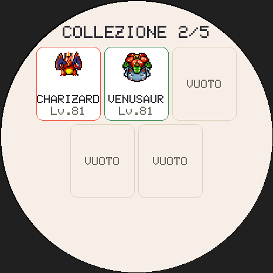
- Chi entra: alla fine di un addio, o del rilascio di una forma finale, il gioco chiede se conservarlo. Con la collezione piena scegli chi liberare, oppure rinunci. Fughe, uova e forme non finali non entrano.
- Il dettaglio di ogni posto mostra tipi, statistiche, le 4 mosse e l'allenatore originale.
- RIPRENDI lo riporta a casa, al massimo una volta al giorno, se ora hai un uovo (che si perde) o una forma finale in buona salute (che prende il suo posto nella collezione). Il Pokémon ripreso tiene età, livello, geni, allenamento, legame, medaglie e nome; le barre ripartono da capo. Quando non si può, il dettaglio dice perché.
- LIBERA lo lascia andare, dopo una conferma.
I Pokémon della collezione formano le squadre delle lotte in collegamento e si possono scambiare (capitolo 18).
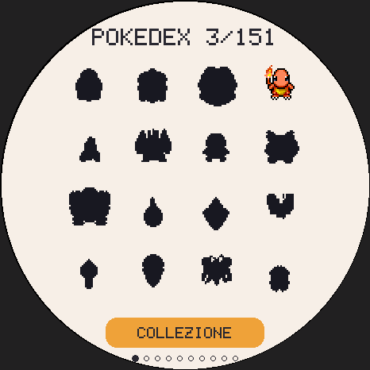
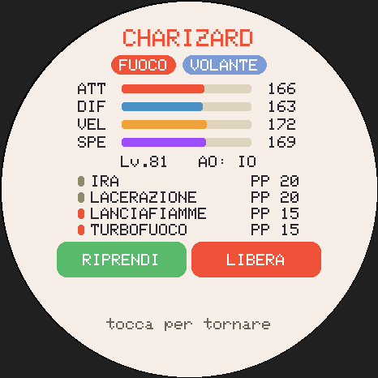
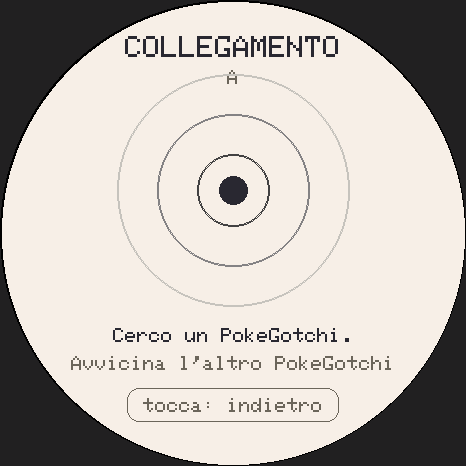
Due schede vicine si collegano via radio, senza internet. Dalla pagina Lotta della scheda tocca «Collega», su tutte e due. La prima volta il gioco chiede il tuo nome da allenatore.
Quando si trovano, i due schermi mostrano la specie dell'altro e lo stesso codice a 4 cifre: se coincide, conferma con SÌ su entrambe.
- Dopo un minuto senza nessuno compare «Nessuno trovato».
- Con due versioni del gioco diverse lo schermo lo dice e mostra le versioni: aggiorna quella più vecchia (capitolo 22).
- Se l'altro esce o il segnale cade per 10 secondi: «Collegamento perso», con «Riprova».
- Si esce toccando la fascia «tocca: indietro» in basso.
Lottare
- Uno dei due tocca «Lotta» e invita. Fa da arbitro (l'host) uno dei due, scelto dal gioco: è lui a scegliere la regola della coppa, «Livello libero» oppure «Tutti al 50» (ognuno combatte al 50, con le ultime 4 mosse imparate fino al 50).
- L'altro vede la proposta e accetta o rifiuta.
- Ognuno sceglie una squadra fino a 3 tra il Pokémon di casa (se può lottare: altrimenti è grigio, con il motivo) e la collezione. L'ordine conta: il primo scende in campo per primo.
- Si combatte con le regole di Rosso e Blu. Ora POKEMON serve davvero per i cambi; quando uno va KO si sceglie il prossimo. «FUGA» qui è una resa, e chiede conferma. Non ci sono limiti di tempo.
- Alla fine «RIVINCITA» (se la vogliono tutti e due) o «ESCI».
I premi sono piccoli, perché due schede vicine non si allenino a vicenda: una vittoria conta nelle vittorie in collegamento, e il Pokémon di casa, se era in squadra, prende +2 di legame vincendo e +1 perdendo o pareggiando.
Scambiare
- «Scambia»: scegli cosa offrire, il Pokémon di casa o uno della collezione (le uova no, e nemmeno chi dorme, si evolve o è in cerimonia).
- Le due carte mostrano «TU» e l'altro: nome, livello, shiny e allenatore originale. Tocca la tua carta per cambiare offerta.
- «Scambia» e poi «SÌ» per accettare. Lo scambio parte solo quando tutti e due hanno accettato le stesse offerte, dopo una copia di sicurezza sulla microSD.
Il Pokémon ricevuto tiene specie, livello, shiny, geni, allenamento e nome, entra nel Pokédex e mostra «AO» con il nome del suo primo allenatore; il legame riparte da zero. Kadabra, Machoke, Graveler e Haunter si evolvono appena arrivano.
Se il collegamento cade a metà scambio, nessun Pokémon si perde: ricollegatevi con le stesse due schede e lo scambio si completa (o si annulla per tutti e due). Solo come ultima risorsa, con un altro allenatore, compare «Annulla scambio»: se l'altro l'aveva già completato, il suo Pokémon andrebbe perso.
Nella versione per il browser la radio non c'è, quindi niente collegamento.
Effetti e musica escono da un Game Boy emulato: gli stessi quattro canali (due onde quadre, l'onda programmabile e il rumore) e un motore come quello delle musiche di Rosso e Blu, che suona nove brani scritti per PokeGotchi.
| Dove | Musica |
|---|---|
| Battaglia con i selvatici | la lotta contro i selvatici, e la sua fanfara della vittoria |
| Lotta in collegamento | la lotta contro gli allenatori |
| Grotta Diglett | un brano cupo, con la batteria |
| Surf | un brano da spiaggia, allegro |
| Altrove | solo gli effetti: tocchi, pappa, cuori, schiuse, evoluzioni… |
Il pannello Audio
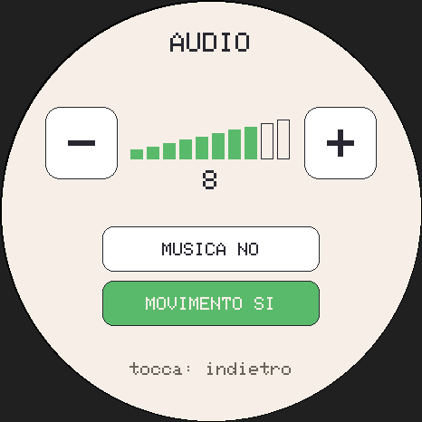
Nelle impostazioni, la pillola del volume («VOL 7») apre il pannello:
- − e +: volume da 0 a 10, per musica ed effetti, con un bip a ogni tocco. A 0 tutto tace.
- MUSICA SÌ/NO: spegne solo la musica; gli effetti restano.
- MOVIMENTO SÌ/NO: scossoni e colpetti (capitolo 15).
Le scelte valgono subito e restano nel salvataggio. L'amplificatore si spegne quando non c'è niente da suonare, quando il Pokémon dorme e quando spegni lo schermo con PWR: così la batteria dura di più.
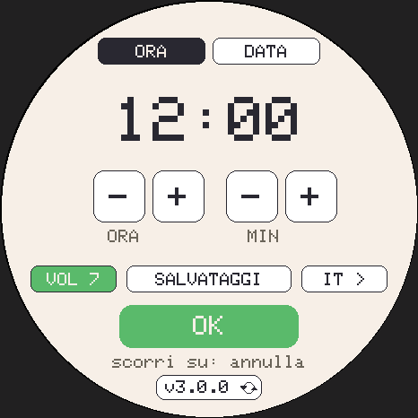
Dalla schermata principale scorri verso il basso. In alto due schede, ORA e DATA: scegli cosa cambiare, poi usa i pulsanti − e +. OK salva nell'orologio della scheda; uno scorrimento in su o in giù chiude senza salvare.
| Pulsante | Cosa fa |
|---|---|
| ORA: − e + delle ore e dei minuti | l'ora (sul giro delle 24 ore e dei 60 minuti) |
| DATA: − e + di anno, mese, giorno | la data (anni dal 2025 al 2099) |
| VOL | apre il pannello Audio (capitolo 19) |
| SALVATAGGI | apre i salvataggi (capitolo 21) |
| IT > | la lingua dopo: ES, EN, FR, DE, IT, PT, JA, KO |
| OK | salva data e ora e chiude |
| La pillola della versione (in fondo) | apre l'aggiornamento via WiFi (capitolo 22) |
Cambiare data o ora non fa invecchiare il Pokémon: il tempo «recuperato» vale solo quando la scheda resta spenta. Serve impostare la data quando l'orologio si è azzerato (una scheda nuova, o rimasta senza batteria, riparte dal 1° gennaio 2026). Lingua e volume cambiano subito, anche senza OK.
Otto lingue
Italiano (predefinito), inglese, spagnolo, francese, tedesco, portoghese, giapponese e coreano. Anche i nomi dei Pokémon sono quelli ufficiali di ogni lingua: Bulbizarre in francese, Bisasam in tedesco, フシギダネ in giapponese, 이상해씨 in coreano. Spagnolo, italiano e portoghese usano i nomi inglesi, come i giochi originali.
La partita vive nella memoria della scheda e sopravvive agli aggiornamenti. Un
salvataggio (un file .pgsave) ne è la copia completa: il Pokémon con
età, geni, allenamento e nome, il Pokédex, la collezione, la serie, le medaglie, la lingua
e il volume. Nei salvataggi il tempo è congelato: i minuti passati tra la copia e il
ripristino non contano.
Sulla scheda
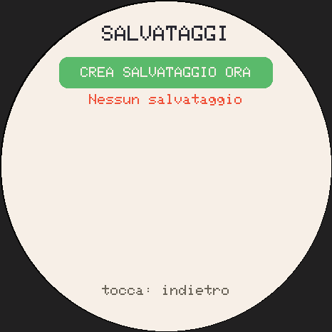
Impostazioni → SALVATAGGI. «Crea salvataggio ora» fa una copia sulla microSD; sotto c'è l'elenco delle copie, quattro per pagina, con data, livello e motivo. Tocca una copia per ripristinarla: il gioco ti mostra cosa contiene e chiede conferma.
Prima di ogni ripristino la partita attuale viene messa da parte sulla microSD: un ripristino sbagliato si annulla ripristinando quella.
Le copie automatiche
| Copia | Quando |
|---|---|
| manuale | «Crea salvataggio ora» |
| giornaliera | una al giorno |
| aggiornamento | al primo avvio di una versione nuova del gioco |
| importazione | la partita attuale, prima di un ripristino |
| scambio | la partita attuale, prima di uno scambio |
Le copie stanno nella cartella /save/ della microSD. Il gioco tiene le 10
più recenti e l'ultima di ogni tipo, e le scrive quando lo schermo è abbassato, per non
rallentarti.
Cambiare scheda, o portarla con sé
- Con la microSD: su una scheda nuova il gioco propone il salvataggio più
recente prima della scelta dell'iniziale. Puoi anche copiare un file sulla microSD con
il nome
/save/importa.pgsave: alla prossima accensione verrà proposto. - Con l'installer web: «Scarica i progressi» e «Carica i progressi».
- Con la versione per il browser: lo stesso file si apre nella PWA, e viceversa (capitolo 23).
Un salvataggio si può ripristinare più volte e su più schede: ripristinare una copia fatta prima di uno scambio fa ricomparire il Pokémon ceduto. È un gioco per uso personale: gioca pulito!
Nelle impostazioni, in fondo, la pillola con la versione e le due frecce apre la schermata AGGIORNA. Il gioco controlla l'ultima versione pubblicata e, se è più nuova della tua, te la installa.
La prima volta: la rete
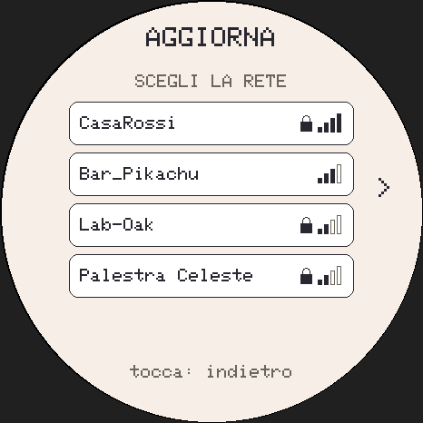
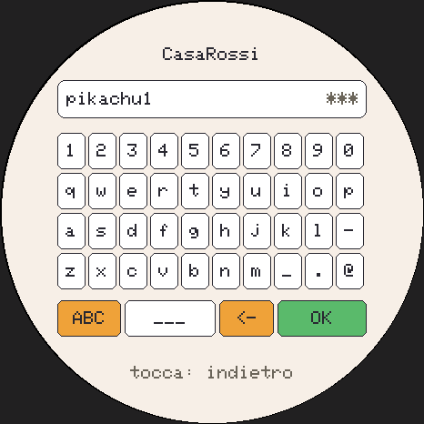
- La scheda cerca le reti WiFi e le elenca dalla più forte, con le tacche del segnale e un lucchetto per quelle protette. Se sono più di quattro, le frecce ai lati sfogliano l'elenco; toccare in alto cerca di nuovo.
- Tocca la tua rete. Se è protetta si apre la tastiera completa: la riga dei numeri, poi minuscole, MAIUSCOLE o simboli (il tasto arancione a sinistra cambia pagina), ___ per lo spazio, <- per cancellare e OK. Tocca il campo in alto per vedere o nascondere quello che scrivi.
- La scheda si collega. Se riesce, si ricorda la rete; se no, «RIPROVA» (forse la password era sbagliata) o «ALTRA RETE».
Le volte dopo non serve far niente: entrando in AGGIORNA si collega e controlla da sola.
Installare
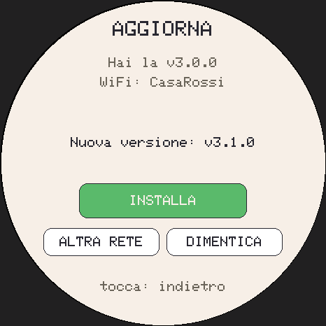
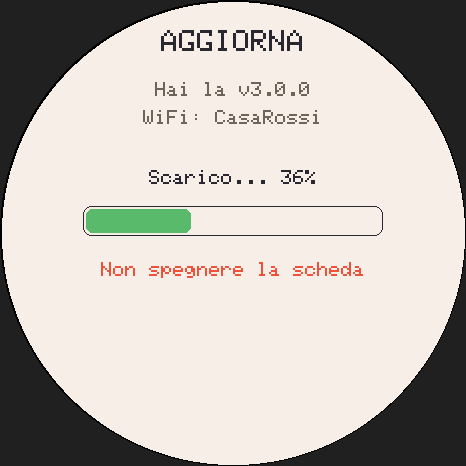
Se c'è una versione nuova compare «Nuova versione» con il suo numero e il pulsante INSTALLA. La scheda salva la partita, scarica il gioco nuovo mostrando la percentuale, ne controlla dimensione e impronta digitale e, se tutto torna, si riavvia con la versione nuova. Il tuo Pokémon resta lì, e il tempo dello scaricamento lo recupera come sempre.
- Serve la batteria almeno al 30 % oppure il cavo USB collegato.
- Se qualcosa va storto (rete caduta, file rovinato) la versione vecchia resta com'era: puoi riprovare senza rischi.
- «Hai l'ultima versione» vuol dire che sei già aggiornato.
| Messaggio | Cosa fare |
|---|---|
| Connessione fallita | controlla la password; avvicinati al router |
| Rete non raggiungibile | la rete c'è ma non porta a internet: riprova più tardi |
| Aggiornamento non trovato | ancora nessuna versione pubblicata, o il server non risponde |
| File non valido | lo scaricamento si è rovinato: «RIPROVA» |
| Batteria troppo scarica | caricala o collega il cavo, poi «RIPROVA» |
«DIMENTICA» cancella la rete ricordata, «ALTRA RETE» ne sceglie un'altra. La password resta solo sulla scheda: non finisce nei salvataggi.
La scheda usa solo il WiFi a 2,4 GHz: se il tuo router ha due reti, scegli quella senza «5G» nel nome.
PokeGotchi gira anche nel browser, sul computer e sul telefono: è lo stesso gioco, con lo stesso codice, gli stessi salvataggi e le stesse musiche.
francescomannarino.github.io/PokeGotchi/gioca/
Installarlo come un'app
- Chrome o Edge sul computer: «Installa app» nella barra dell'indirizzo.
- Android: menu → «Aggiungi a schermata Home» (o «Installa»).
- iPhone e iPad: Condividi → «Aggiungi alla schermata Home».
Si apre a tutto schermo. Il mouse e il dito fanno da touch; sotto lo schermo c'è anche il pulsante PWR.
Sprite e gioco offline
Gli sprite arrivano quando servono e restano nel browser. «Scarica gli sprite per giocare offline» li prende tutti (circa 40 MB): da lì il gioco funziona anche senza connessione.
I salvataggi nel browser
La partita si salva da sola nel browser. Il pulsante con il dischetto, in basso a sinistra, apre i salvataggi:
- Esporta salvataggio: sul telefono lo condividi (in File, in Drive o a te stesso), sul computer lo scarichi;
- Importa da file: carica un
.pgsave, anche quello della scheda; - Copie automatiche: le ultime 3, una al giorno;
- Porta dalla scheda / sulla scheda: in Chrome o Edge, con la scheda collegata via USB.
Se non esporti da 7 giorni, un pallino rosso sul dischetto te lo ricorda.
Cosa cambia
- La versione nuova si scarica da sola e compare «Nuova versione pronta · Aggiorna».
- I giochi a inclinazione usano il sensore del telefono (su iPhone si chiede il permesso al primo tocco); sul computer usano il joystick. C'è lo scossone, non il doppio colpetto.
- Il suono parte al primo tocco, come vogliono i browser.
- Niente collegamento tra dispositivi, e niente notifiche: il gioco recupera il tempo quando lo riapri.
Su iPhone e iPad Safari può cancellare i dati dei siti non installati: aggiungi PokeGotchi alla schermata Home ed esporta un salvataggio ogni tanto.
La batteria
- Usa una LiPo protetta da 3,7 V e controlla la polarità del connettore prima di collegarla: non tutti i cavetti hanno i fili nello stesso ordine.
- Si ricarica dal cavo USB-C. L'icona in alto mostra la carica.
- Per un viaggio lungo spegni la scheda con la pressione lunga di PWR: l'orologio continua, e il Pokémon recupera il tempo alla riaccensione.
Lo schermo
Gli schermi AMOLED temono le immagini fisse per ore: per questo PokeGotchi abbassa la luce dopo 90 secondi. Se lo lasci acceso sulla scrivania, spegni lo schermo con una pressione breve di PWR.
Se qualcosa non va
| Problema | Soluzione |
|---|---|
| Vedo solo pochi Pokémon disegnati in modo semplice | la microSD manca o non è in FAT32; ricarica gli sprite con l'installer (passo 4) |
| È notte di giorno, o le ricompense giornaliere sbagliano | imposta data e ora (capitolo 20) |
| Non sento niente | volume sopra 0, altoparlante collegato; mentre dorme o con lo schermo spento il suono tace |
| Il primo tocco «non fa niente» | lo schermo era abbassato: il primo tocco lo riaccende soltanto |
| Il collegamento non trova l'altra scheda | tutte e due in «Collega», vicine, con la stessa versione del gioco |
| L'aggiornamento non si collega | rete a 2,4 GHz, password giusta, batteria sopra il 30 % |
| Dopo un flash il Pokémon non c'è più | era spuntato «Erase device»: ripristina una copia dalla microSD o dal computer (capitolo 21) |
| Nel browser la partita è sparita | importa l'ultimo salvataggio esportato; installa l'app sulla schermata Home |
Hai trovato un errore? Puoi segnalarlo nella pagina del progetto su GitHub (github.com/francescomannarino/PokeGotchi): molte correzioni sono arrivate così.
Collegata al computer, la scheda risponde a dei comandi testuali sulla porta seriale USB
(115200 baud), da un monitor seriale qualsiasi. Ogni comando risponde DONE
oppure ERR con il motivo.
Sempre disponibili
| Comando | Cosa fa |
|---|---|
STATS | lo stato completo del Pokémon |
HEALTH | memoria, microSD, motivo dell'ultimo riavvio |
REG | il Pokédex |
COL | la collezione |
TIME / TIME <epoch> | legge o imposta data e ora |
PWR | come una pressione breve di PWR |
EGGS | simula 20 uova, senza toccare la partita |
BEEP / AUDIO | prova e stato dell'audio |
MOTO | il sensore di movimento |
LINK | lo stato del collegamento |
OTA | versione, rete ricordata, aggiornamento |
EXPORT / IMPORT / BACKUP | salvataggi (l'importazione va confermata sullo schermo) |
LS / SDINFO / PUT | i file della microSD (li usa l'installer) |
Comandi di prova
Gli altri comandi cambiano la partita, e rispondono ERR finché non mandi
DEBUG ON (vale fino al riavvio): SPEC, LVL,
HATCH, SHINY, NICK, BARRE,
BATTLE, BYE, RUN, WIFI,
AGGIORNA e altri. L'elenco completo è nel file COMANDI.md del
repository.
WIPE YES cancella tutta la partita e ricomincia da capo. Fai prima un
salvataggio!
| AO | allenatore originale: chi ha cresciuto per primo un Pokémon ricevuto con uno scambio |
| Bioma | l'ambiente dello sfondo, che dipende dal tipo del Pokémon |
| Cerimonia | la scena di 10 secondi che chiude un ciclo di vita |
| Collezione | i 5 posti per i Pokémon conservati |
| Coppa | la regola di una lotta in collegamento: livello libero o tutti al 50 |
| Forma finale | l'ultima evoluzione di una linea (o una specie che non si evolve) |
| Geni | i valori dal 90 al 110 % che rendono unico ogni Pokémon |
| Host | chi fa da arbitro in una lotta in collegamento |
| Legame | l'affetto tra te e il Pokémon (barra LEG) |
| microSD | la schedina di memoria con gli sprite e le copie dei salvataggi |
| .pgsave | un file di salvataggio |
| PP | quante volte si può ancora usare una mossa in battaglia |
| PWA | la versione per il browser e il telefono, installabile come un'app |
| PWR | il pulsante fisico della scheda |
| Rarità | comune, raro o leggendario: la classe di un uovo |
| Serie | i giorni di fila in cui ti sei preso cura del tuo Pokémon |
| Shiny | un Pokémon con i colori diversi, molto raro |
| Sprite | il disegno animato di un Pokémon |
| Trascuratezza | una barra lasciata scendere a 10 o meno |
| WiFi a 2,4 GHz | la rete che la scheda usa per aggiornarsi |
| Zero | la posizione «di riposo» misurata all'inizio dei giochi a inclinazione |
| Livello | +1 ogni ora di vita |
| Cali al minuto (sveglio) | CIB −2, GIO −1, ENE −1, IGI −1 |
| Trascuratezza | una barra a 10 o meno; +1 livello per evolversi |
| Evoluzione | livello giusto e tutte le barre ad almeno 40 |
| Addio | forma finale e 3 giorni di vita |
| Fuga | tutte le barre a 0 per un'ora |
| Rilascio | pressione lunga di 3 secondi sul Pokémon |
| Shiny | 1 su 48 (1 su 24 dopo un addio, fino a 1 su 8) |
| Leggendari | dopo 25 specie registrate |
| Bacca / preferita / dolcetto | CIB +25 / +35 e GIO +10 / +10 e GIO +12, peso +12 |
| Coccola | GIO +5 |
| Nanna | ENE +6 al minuto |
| Battaglia | ENE −12, CIB −6; 5 vittorie premiate al giorno |
| Sacco | 10 secondi; 4 colpi = 1 forza, max +18 |
| Grotta Diglett | 4 punti = 1 difesa, max +18; 3 colpi o 90 secondi |
| Surf | 1 punto a salto, +2 a giro; 3 cadute o 90 secondi |
| Collezione | 5 posti; RIPRENDI una volta al giorno |
| Spento | recupera fino a 2 settimane, barre non sotto 15 |
| Aggiornamento | WiFi 2,4 GHz, batteria al 30 % o cavo USB |
Da dove viene
PokeGotchi nasce come seguito di socquique/TamaPoke di Quique Tortosa, il progetto originale: firmware, sprite PMD, installer web e la scocca a forma di Pokéball. Da lì è cresciuto con il lavoro di Francesco Mannarino: battaglie della prima generazione, collegamento, collezione, minigiochi a movimento, musiche del Game Boy, salvataggi, versione per il browser, aggiornamenti via WiFi, otto lingue e molto altro.
- DylanPDao/TamaPoke: il motore di battaglia e l'intelligenza della CPU, il modello delle mosse, la schermata di battaglia e il protocollo del collegamento (licenza MIT).
- allenst486db/iTamaPoke: l'idea della versione per telefono e dei salvataggi esportabili.
- ShadowEnemyx/TamaPoke (Expanded): idee per le battaglie.
- pret/pokered: i dati di battaglia di Rosso e Blu e l'algoritmo del motore audio.
- Pan Docs (gbdev) e Blip_Buffer (Shay Green): come suona un Game Boy.
Sprite, dati e musiche
- Sprite: PMD Sprite Collaboration (SpriteCollab), opera della sua comunità di artisti, licenza CC BY-NC 4.0. Gli autori di ogni sprite sono nel file CREDITI_SPRITE del sito e del repository; l'installer e la versione per il browser scaricano gli sprite da SpriteCollab e li convertono sul tuo dispositivo.
- Statistiche e nomi localizzati: PokéAPI.
- Musiche: nove brani originali, scritti per PokeGotchi.
Software
GFX Library for Arduino (moononournation), SensorLib e XPowersLib (Lewis He), U8g2 (olikraus), il core Arduino per ESP32 (Espressif), ESP Web Tools (Nabu Casa), Emscripten, SDL2, release-please. Il font a pixel di questo libretto è quello dello schermo della scheda (Adafruit GFX, licenza BSD). I testi completi delle licenze sono nel file THIRD_PARTY_NOTICES del sito, delle release e del repository.
Il codice di PokeGotchi è distribuito con licenza MIT. Pokémon e tutti i nomi, i design e i personaggi correlati sono marchi e © di Nintendo, Game Freak, Creatures e The Pokémon Company. Questo è un progetto di appassionati, non commerciale, non affiliato né approvato da queste aziende.
Il codice, le novità e le segnalazioni:
github.com/francescomannarino/PokeGotchi
Installer, gioco nel browser e questo libretto:
francescomannarino.github.io/PokeGotchi
PokeGotchi @VERSIONE@ · codice con licenza MIT · progetto di appassionati, non commerciale e non affiliato a Nintendo, Game Freak, Creatures o The Pokémon Company.